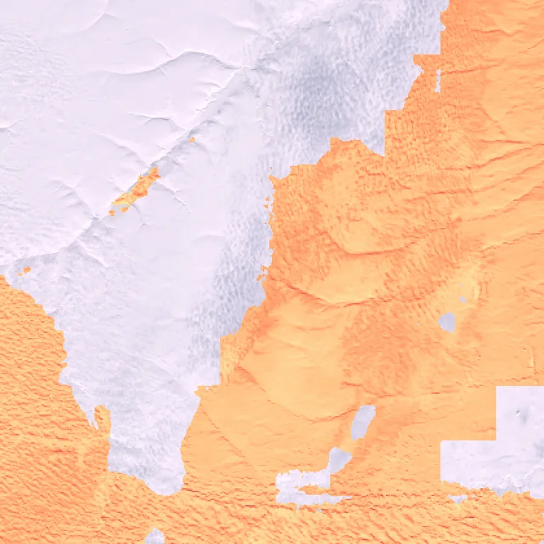

Benchmark / Use cases / Cloud optical thickness / Results / T05WPT-20190419
T05WPT-20190419

Optical thickness retrieved by Clouds Decoded, from 0.1 in black to 100 in pale yellow on a log scale, over the true-colour crop.
Sample
| surface | land |
|---|---|
| regime | snow |
| product | S2B_MSIL1C_20190419T215539_N0500_R029_T05WPT_20221026T112953 |
| col_off | 0 |
| row_off | 3540 |
Compression ratio and optical thickness
Each point is one level of a codec, named when you point at it, on this sample.
GeoZL PIVCOGeoZL PFORJPEG XLgeorvq